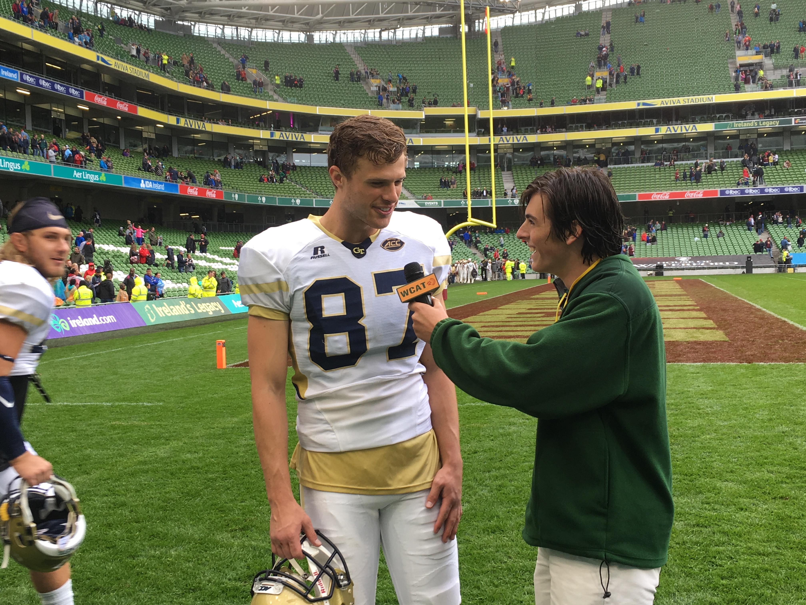

In Sepetember of 2016 I had the amazing opportunity of traveling to Dublin, Ireland in order to cover three highschool football games as well as the Boston College versus Georgia Tech season opener. Over the course of four days I spent time interviewing college atheltes and coachs as well as live broadcasting three highschool football games from teams all across America competeing in the Ireland Football Showcase. After calling three live broadcast I had the opportunity to test my skills on a professional level by covering the GT vs. BC game from the sidelines as well as post-game interviews and press conferences.
While I am not a fan of either Georgia Tech or Boston College the expeirence was still once in a life time and the sideline passes didn't hurt! While on the field I got to watch some incredibe football with the Jackets just beating Boston College in a thriller game. Even though I wasn't cheering for a particular game taking in the sights and sounds of being on the field, in Ireland for College football is an experience I'll never forget.
Interview with Harrison ButkerAfter the game I got a chance to chance to catch up with former Westminster graduate and at the time Georgia Tech place kicker Harrison Butker. Harrison went 2/2 on the day and put back every point after requested of him. Harrison is now the main place kicker for the Kansas City Chiefs. |
 |